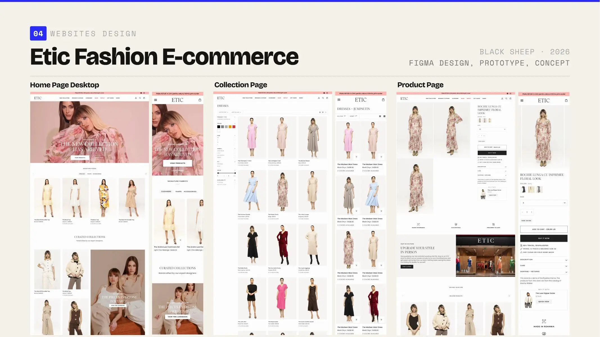

Let the hero set the tone.
The homepage establishes the collection world before introducing product density.
Turning a fashion homepage into a storefront.

Ecommerce concept, collection imagery, product experience and automated email flows.
Etic is a Romanian women’s fashion brand whose existing homepage was essentially a single video experience, leaving much of the collection hidden behind navigation.
I explored a fuller ecommerce direction that introduced collections, products and stronger catalogue pathways while retaining the fashion-led character. I also reworked collection imagery, clarified the product experience and developed an initial set of automated email flows.
Homepage, collection and product pages create stronger routes into the catalogue. Relatively small changes in presentation and hierarchy make the brand feel considerably more considered across desktop and mobile.
The initial retention system carries editorial imagery and product hierarchy into the inbox without losing the clarity required for commercial action.
The hero sets the tone, collection imagery becomes more consistent, and product details sit closer to the decisions they support.
The homepage establishes the collection world before introducing product density.
Filters and product information stay systematic so garments retain visual priority.
Product imagery, variation and purchase controls remain close enough to compare without crowding.